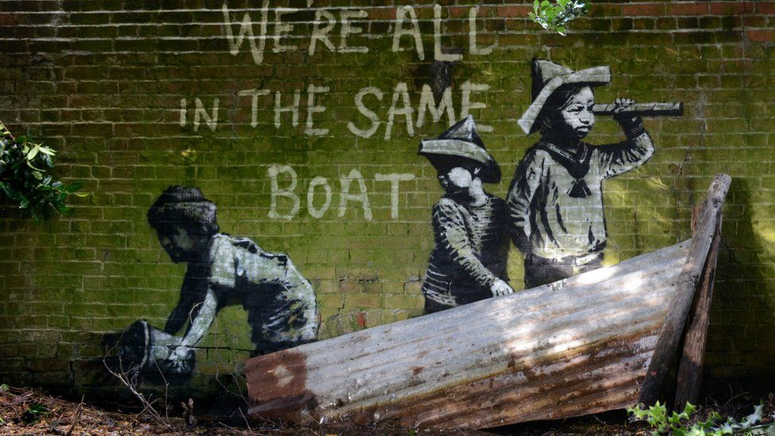

Part of 'Banksy' artwork near Lowestoft removed over flood fears
6 hours ago

A piece of street art possibly created by secretive graffiti artist Banksy has been removed over flooding fears.
The artwork in Nicholas Everitt Park near Lowestoft, Suffolk, depicted three children, who appeared to be stood in a small boat placed under the painting.
Oulton Broad Parish Council said the metal "boat" was removed because it was blocking a drain and rain was forecast.